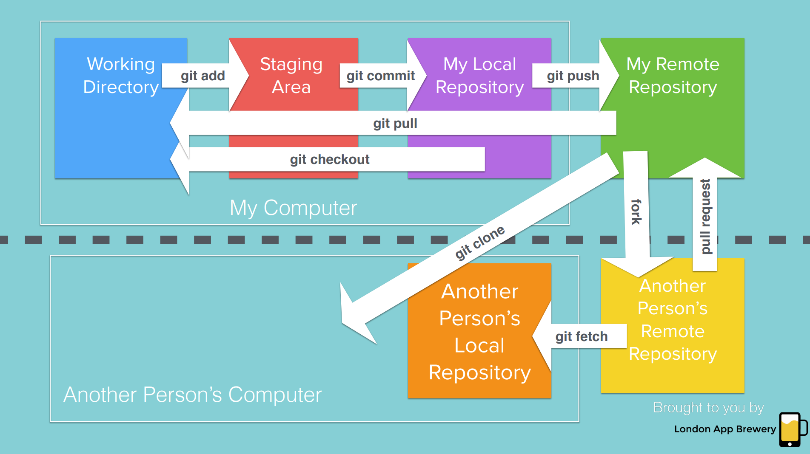

Es una herramienta de control de versiones
Bases
Inicializar estando dentro de una carpeta con git init. Esto crea el archivo oculto .git, el repositorio local
Ver el estado del repositorio con git status
Agregar archivos o careptas al area de staging con git add <archivos>. Agregar todos los archivos dentro de la carpeta con git add ., agregar con expresiones regulares, ej txt: git add *.txt
Agregar al repositorio con git commit -m <mensaje>, el flag -m toma el parametro <mensaje>. En caso no se use, nos redigirá al editor por defecto para insertar un gran mensaje
Ver los logs con git log, se ve: el hash identificador, el autor, la fecha del commit y el mensaje.
Una vez hay modificaciones(nuevos archivos, archivos modificados, archivos eliminados) se debe agregar y hacer commit.
Comparar archivos pasados y cambios con git diff <archivo>, lo rojo es lo eliminado y lo verde es lo agregado. En GitHub ver los commits
Revertir a la ultima version anterior con git checkout <archivo>
Repositorio remoto
Con un repositorio creado en GitHub, transferir los commits con git remote add origin <link>, origin es el nombre del repositorio remoto
Subir los commits con git push -u origin master, el flag -u vincula el repositorio remoto origin con el local, master es el nombre del branch en noviembre de 2022 se usa la rama main. Ver una representacion visual en GitHub en Insights->Network
Ignorar
Primero se debe crear el archivo .gitignore, debe ser exactamente ese nombre ya que GIT busca este archivo. Agregar los archivos que queremos ignorar, comentar con #
Eliminar archivos del area de staging con git rm --cached <archivo>
GitHub tiene un repositorio con templates para ignorar en diferentes lenguajes, proyectos, etc.
Clonar repositorios
Con git clone <repositorio>. Al clonar (a diferencia de descargar los archivos), se tiene el archivo .git con el historial, versiones, etc.
Branching y Merging
Normalmente se crean ramas para que varias personas trabajen por separado
Podemos ver la rama actual con git branch, la que tenga un * es la actual.
Crear una rama con git branch <nombre>
Cambiar de rama con git checkout <rama>
Se puede crear una rama y cambiar a ella en un paso con git checkout -b <rama>
Al cambiar de rama, los archivos se restauran a la version de la rama actual.
Desde la rama principal combinar ramas con git merge <rama>, lo que lleva al editor por defecto para dejar un mensaje. La rama con la que se combinó aun existe. Todo esto se puede hacer desde GitHub, se llama pull request porque se está en la rama actual y se jala cambios desde otra rama.
Forking y pull requests
